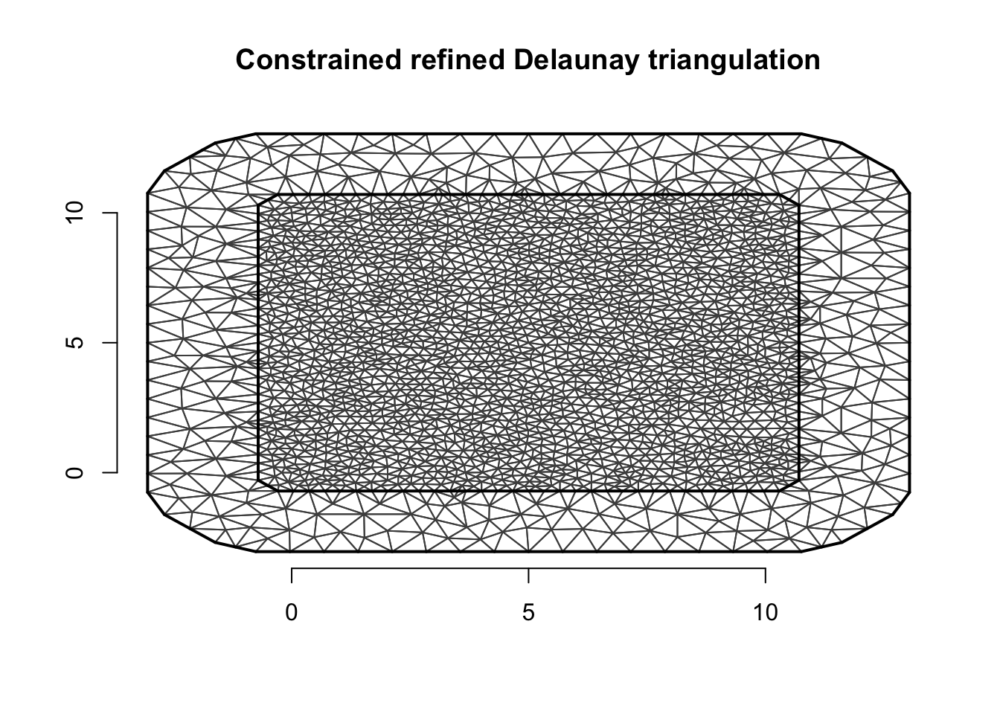
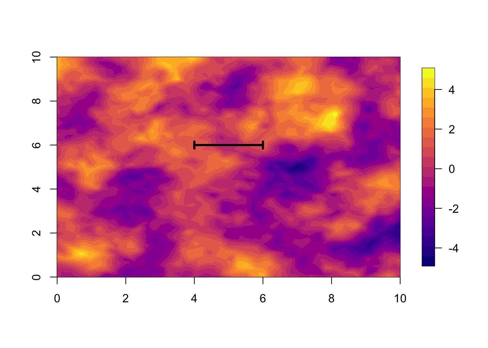
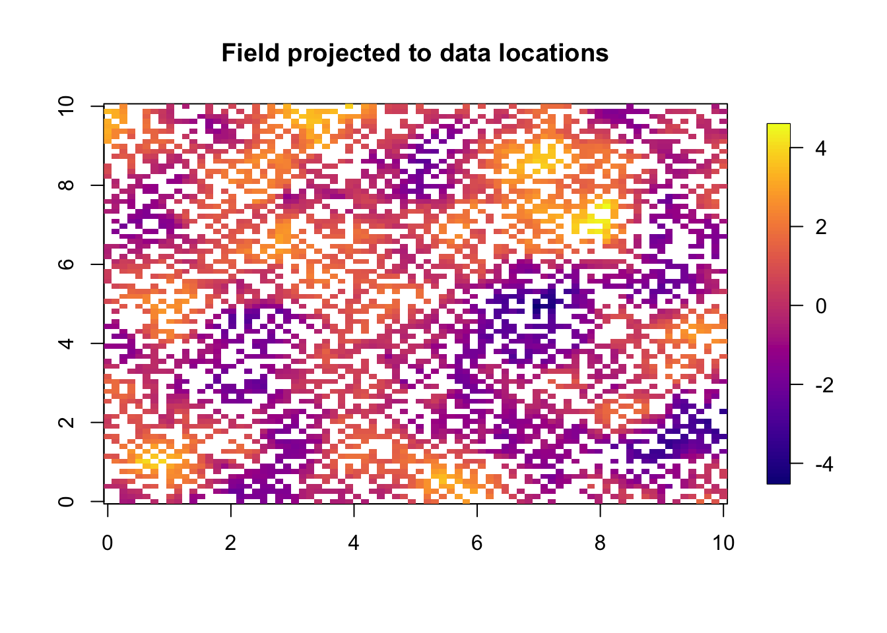
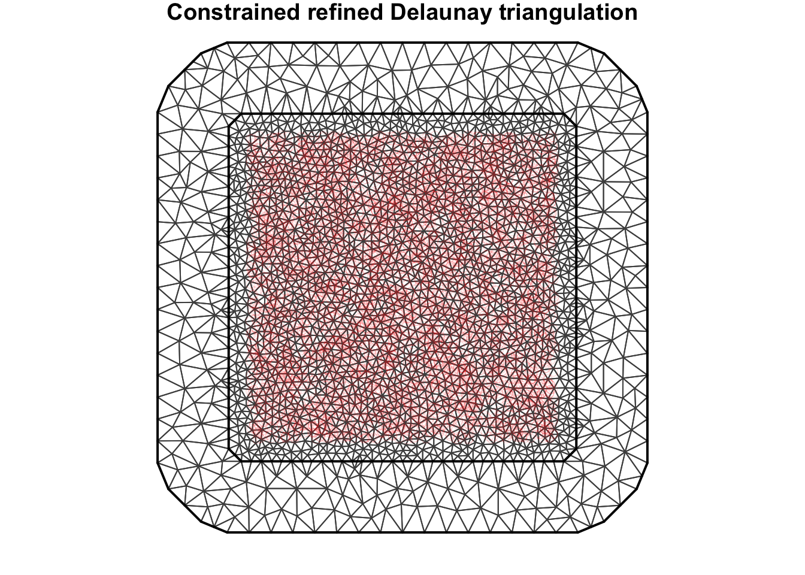
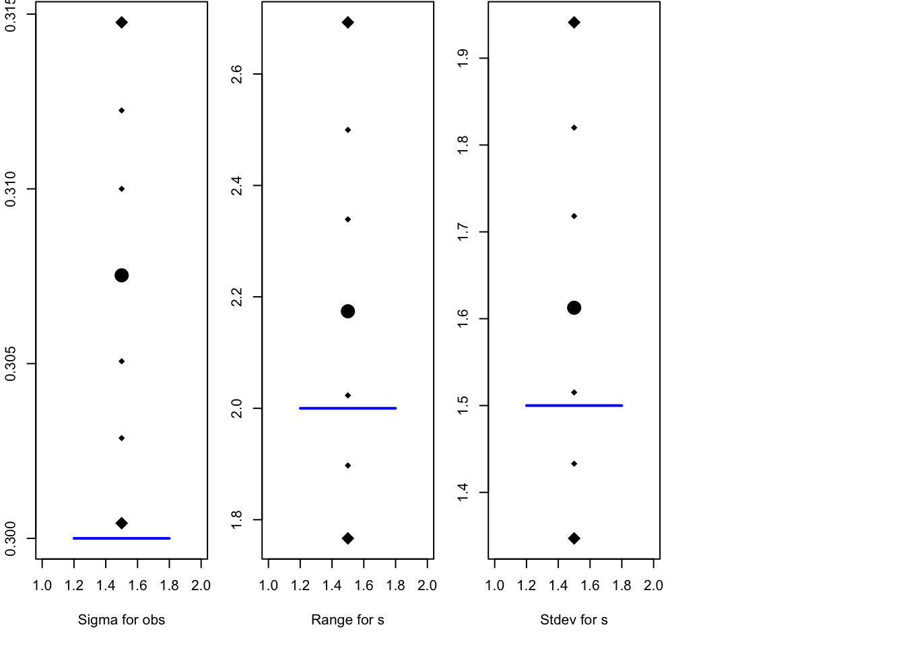

This topic is a simple example of a spatial model, with simulation and then inference. By simulating the data I aim to show the structure of a spatial hierarchical model.
We load libraries, including INLA (Installation and general troubleshooting).
library(INLA)
library(fields)
library(ggplot2)
library(viridisLite)We remove all variables in the workspace (you may want to remove this), and set the random seeds (so you can replicate the results).
rm(list=ls())
set.seed(201803)
inla.seed = sample.int(n=1E6, size=1)
options(width=70, digits=3)The following function shows how to plot a spatial field. This is done by projecting the values at the mesh nodes on to a fine grid. We will skip over the explanation for now, and just consider it a black box function.
local.plot.field = function(field, mesh, xlim=c(0,10), ylim=c(0,10), ...){
stopifnot(length(field) == mesh$n)
proj = inla.mesh.projector(mesh, xlim = xlim,
ylim = ylim, dims=c(300, 300))
field.proj = inla.mesh.project(proj, field)
n.col = 20
image.plot(list(x = proj$x, y=proj$y, z = field.proj),
xlim = xlim, ylim = ylim, col = plasma(n.col), nlevel=n.col+1, ...)
}The default values for xlim and ylim shows the spatial region we use in this topic.
The original paper introducing the SPDE approach for INLA was written by Lindgren, Rue, and Lindström (2011), and a recent review was written by Bakka et al. (2018).
The hierarchical Bayesian model describes the data \(y\) by an iid observation likelihood, \[y_i | \eta_i \sim L(y_i|\eta_i),\] where \[\eta_i = \beta_0 + X_i\beta + u_i, \] with \(u_i = u(s_i)\).
The model we want for the spatial effect \(u\) is \[\boldsymbol u | r, \sigma_u \sim \mathcal N(0, \Sigma) \] Here, \(\Sigma_{r, \sigma}\) is the Mat' ern covariance with range \(r\) and marginal standard deviation \(\sigma\) (with smoothness 1).
To get this, we will create a mesh, construct the Mat' ern model on the mesh, and project it to the data locations with a so-called \(A\)-matrix. Let us call the vector of values on the mesh for field, or \(f_s\), and \(\boldsymbol u\) is the vector of the fields values at the observation locations, then \[\boldsymbol u = A f_s, \] In code u = A %*% field.
sigma.u = 1.5
# - the marginal standard deviation of the spatial field
range = 2
# - the correlation range of the spatial field
#kappa = sqrt(8)/range
# - kappa was the parameter we used in previous years
# - not used in this code, but you may encounter itWe use a mesh since simulating using a covariance matrix is slow.
fake.locations = matrix(c(0,0,10,10, 0, 10, 10, 0), nrow = 4, byrow = T)
mesh.sim = inla.mesh.2d(loc = fake.locations, max.edge=c(0.4, 1))We then look at the mesh to check that it is no unreasonable. My quick rules of thumb is that the outer extension is greater than 2/3 the range, and that the max.edge is smaller than 1/5 of the range. (If the true range is not known, we may need to run INLA more than once.)
plot(mesh.sim)
axis(1); axis(2)
We use the term spatial “field” for one continuous field in the entire study area. We use the term spatial “effect” for the entire model component, including hyper-parameters. When setting up the spde object for simulating, the prior is never used. We just plug in 0.5 everywhere as this gives no errors.
spde = inla.spde2.pcmatern(mesh.sim, prior.range = c(.5, .5), prior.sigma = c(.5, .5))
Qu = inla.spde.precision(spde, theta=c(log(range), log(sigma.u)))
u = inla.qsample(n=1, Q=Qu, seed = inla.seed)
u = u[ ,1]local.plot.field(u, mesh.sim)
len = range
# - the true range
arrows(5-0.5*len, 6, 5+0.5*len, 6, length=0.05, angle=90, code=3, lwd=3)
The simulation we have so far is a continuous simulation for the entire study area. Now we want to project this to a set of observation locations.
n = 5*1E3
# - number of measurement locations
# - Don't do more than 5000 if you want the code to be quick to run (1 minute)
# - can do 100*1E3
loc.data = matrix(runif(2*n), n)*10 # coordinates
# - We pick the locations uniformly at random.u to loc.dataA = inla.spde.make.A(mesh=mesh.sim, loc=loc.data)
u = drop(A %*% u)We use one of my favourite functions to plot this on an approximated locations grid.
quilt.plot(x=loc.data[, 1],y=loc.data[, 2],z=u,nx=80,ny=80,
col = plasma(101), main="Field projected to data locations",
zlim = range(u))
The observation likelihood is \[y_i \sim \mathcal N(\eta_i, \sigma_\epsilon) \]
The \(\sigma_\epsilon\) is also known as: \(\sigma_{iid}\), sigma.iid, and sigma.epsilon.
sigma.iid = 0.3
# - set the true valueFurther, the linear predictor is \[\eta_i = \beta_1 + \beta_2 x + u(s_i),\] where \(u(s_i) = u_i\) is the spatial field projected to the data locations \(s_i\). As code, this linear predictor will be represented by formula = y ~ -1 + intercept + x + f(s, model = spde) when fitting the model
Set true parameter values
x = runif(n)-0.5
# - mean 0 to not affect intercept
beta = c(1, 2)
# - define true beta coefficientsNext we construct the linear predictor.
lin.pred = beta[1] + beta[2]*x + u
# the true lin predictory = lin.pred + sigma.iid*rnorm(n)
# - the observed dataquilt.plot(x=loc.data[, 1],y=loc.data[, 2],z=y,nx=80,ny=80,
col = plasma(101), main="Observed data",
zlim = range(y))This dataframe is the only object our inference is allowed to use.
df = data.frame(y=y, locx=loc.data[ ,1], locy=loc.data[ ,2], x = x)
summary(df)## y locx locy x
## Min. :-3.90 Min. : 0.00 Min. : 0.00 Min. :-0.500
## 1st Qu.:-0.07 1st Qu.: 2.55 1st Qu.: 2.53 1st Qu.:-0.255
## Median : 1.04 Median : 4.93 Median : 5.08 Median : 0.003
## Mean : 1.04 Mean : 4.98 Mean : 5.06 Mean :-0.002
## 3rd Qu.: 2.12 3rd Qu.: 7.36 3rd Qu.: 7.58 3rd Qu.: 0.249
## Max. : 6.00 Max. :10.00 Max. :10.00 Max. : 0.500The choice of mesh should not matter too much, and we do not need to use the same mesh for simulation and for inference.
mesh = inla.mesh.2d(loc = fake.locations, max.edge=c(0.4, 1))
mesh$n## [1] 2433A = inla.spde.make.A(mesh=mesh, loc=data.matrix(df[ , c('locx', 'locy')]))
dim(A); ## [1] 5000 2433Plot the mesh and data; for diagnostics
par(mar=c(1,1,1,1))
plot(mesh, asp=1)
points(df[ , c('locx', 'locy')], col='red', lwd=.1)
prior.median.sd = 1; prior.median.range = 5
spde = inla.spde2.pcmatern(mesh, prior.range = c(prior.median.range, .5), prior.sigma = c(prior.median.sd, .5))stack = inla.stack(tag='est',
# - Name (nametag) of the stack
# - Here: est for estimating
data=list(y=df$y),
effects=list(
# - The Model Components
s=1:spde$n.spde,
# - The first is 's' (for spatial)
data.frame(intercept=1, x=df$x)),
# - The second is all fixed effects
A=list(A, 1)
# - First projector matrix is for 's'
# - second is for 'fixed effects'
)We assume, \[\epsilon_i \sim \mathcal N(0, \sigma_\epsilon^2) \] and use the prior, \[\sigma_\epsilon \sim \exp(\lambda) \] where \(\lambda\) is determined by setting the prior median. In this prior assumption we assume that some of the variability in the data sd(y)= 1.553 has been explained by the covariates (by modeling the “mean”).
family = "gaussian"
prior.median.sd.g = 0.5 # prior median for sigma.epsilon
control.family = list(hyper = list(prec = list(
prior = "pc.prec", param =
c(prior.median.sd.g,0.5))))formula = y ~ -1 + intercept + x + f(s, model=spde)
# - Remove standard intercept (always when using inla.stack)
# - Fixed effects + random effects
# - s belongs to the mesh
# - A-matrix will tell inla() how to go from mesh to data
initial.theta = c(2.35, 0.79, 0.46)
# - the first time you run this, set it to NULL
# - after running, set it to res$internal.summary.hyperpar$mean
# - and run the code again
# - Reason: Both faster and better inference
res = inla(formula, data=inla.stack.data(stack),
family = family,
control.family = control.family,
control.predictor=list(A = inla.stack.A(stack)),
quantiles=c(0.5, 0.025, 0.975, 0.1, 0.9, 0.25, 0.75),
#control.compute = list(config=T, dic=T, cpo=T, waic=T),
# - Model comparisons
#control.inla = list(int.strategy='grid'),
# - More accurate integration over hyper-parameters
control.mode = list(restart = T, theta = initial.theta))We just show the default summary.
summary(res)##
## Call:
## c("inla(formula = formula, family = family, data =
## inla.stack.data(stack), ", " quantiles = c(0.5, 0.025, 0.975,
## 0.1, 0.9, 0.25, 0.75), control.predictor = list(A =
## inla.stack.A(stack)), ", " control.family = control.family,
## control.mode = list(restart = T, ", " theta =
## initial.theta))")
## Time used:
## Pre = 1.66, Running = 12, Post = 0.11, Total = 13.8
## Fixed effects:
## mean sd 0.5quant 0.025quant 0.975quant 0.1quant 0.9quant
## intercept 0.92 0.291 0.923 0.332 1.49 0.55 1.28
## x 2.00 0.017 1.996 1.962 2.03 1.97 2.02
## 0.25quant 0.75quant mode kld
## intercept 0.731 1.11 0.929 0
## x 1.985 2.01 1.996 0
##
## Random effects:
## Name Model
## s SPDE2 model
##
## Model hyperparameters:
## mean sd 0.5quant
## Precision for the Gaussian observations 10.38 0.247 10.37
## Range for s 1.99 0.199 1.97
## Stdev for s 1.47 0.123 1.46
## 0.025quant 0.975quant
## Precision for the Gaussian observations 9.89 10.87
## Range for s 1.65 2.43
## Stdev for s 1.25 1.74
## 0.1quant 0.9quant 0.25quant
## Precision for the Gaussian observations 10.06 10.69 10.21
## Range for s 1.75 2.26 1.85
## Stdev for s 1.32 1.63 1.38
## 0.75quant mode
## Precision for the Gaussian observations 10.54 10.37
## Range for s 2.12 1.93
## Stdev for s 1.54 1.43
##
## Expected number of effective parameters(stdev): 1087.66(15.82)
## Number of equivalent replicates : 4.60
##
## Marginal log-Likelihood: -2726.65Let us look at my favourite summaries and plots of the result.
local.plot.quant = function (quantiles, truth = NA) {
cn = colnames(quantiles)
ids = setdiff(grep("quant", cn), which(cn=="0.5quant"))
qu = quantiles[ids]
#plot(rep(c(1,2,NA), length(qu)), rep(qu, each=3), type="p", pch=19, xaxt="n", xlab = rownames(quantiles), ylab="n")
plot(c(1,2,rep(1.5, length(qu)), NA), c(NA,NA, qu, truth), type="p", pch=18, xaxt=NULL, xlab = rownames(quantiles), ylab="n")
points(c(rep(1.5, 2)), range(qu), type="p", pch=18,cex=2)
points(1.5, quantiles[which(cn=="0.5quant")], pch=19, cex=2)
if (!is.na(truth)) {
lines(c(1.2,1.8), rep(truth, 2), col="blue", lwd=2)
}
}par(mfrow=c(1,4), mar=c(5.1, 2.1, 0.1, 1.1))
q1 = sqrt(1/res$summary.hyperpar[1, ])
rownames(q1) = "Sigma for obs"
local.plot.quant(q1, truth = sigma.iid)
local.plot.quant(res$summary.hyperpar[2, ], truth = range)
local.plot.quant(res$summary.hyperpar[3, ], truth = sigma.u)
par(mfrow=c(1,4), mar=c(5.1, 2.1, 0.1, 1.1))
local.plot.quant(res$summary.fixed[1, ], truth = beta[1])
local.plot.quant(res$summary.fixed[2, ], truth = beta[2])We now visualise what we call “parameters”, namely the \(u(s)\) (or \(f(s)\), \(f_s\)) for the random effect. The difficulty with visualising these is that there are so many of them:
nrow(res$summary.random$s)## [1] 2433We will not only viusualise these at the data locations, but everywhere in the study area.
local.plot.field(res$summary.random[['s']][['mean']], mesh)
len = res$summary.hyperpar[2, '0.5quant']
# - the posterior median range
arrows(5-0.5*len, 5, 5+0.5*len, 5, length=0.05, angle=90, code=3, lwd=3)We can visualise the posterior sd or quantiles in a similar way (commented out).
#local.plot.field(res$summary.random[['s']][['sd']], mesh, colors = NULL)
#points(x = df$locx, y=df$locy, lwd = .1)
9 Comments
9.1 Exercises
9.2 Point estimates
I use medians as point estimates for hyper-parameters, but for parameters on the scale of the linear predictor I use the mean, because the mean function is linear (and we want to add up components of the linear predictor).
9.3 Signal-to-noise
9.3.1 Visualising posterior of hyper-parameters
For the hyper-parameters, I used to plot the posterior marginals, but now I only visualise the quantiles. The main reason for this is that marginals are easy to misinterpret, as the probability density depends on the choice of parametrisation. For example, in some parametrisation the posterior is bimodal, and in some other parametrisation some imporatant part of the probability mass is so far into the tail that any plot window is too small.
References
Bakka, Haakon, Håvard Rue, Geir-Arne Fuglstad, Andrea Riebler, David Bolin, Elias Krainski, Daniel Simpson, and Finn Lindgren. 2018. “Spatial Modelling with R-Inla: A Review.” arXiv Preprint arXiv:1802.06350.
Lindgren, Finn, Håvard Rue, and Johan Lindström. 2011. “An Explicit Link Between Gaussian Fields and Gaussian Markov Random Fields: The Stochastic Partial Differential Equation Approach.” Journal of the Royal Statistical Society: Series B (Statistical Methodology) 73 (4). Blackwell Publishing Ltd: 423–98. https://doi.org/10.1111/j.1467-9868.2011.00777.x.